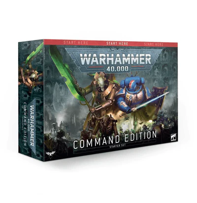

Warhammer 40K Command Edition
ProductShow
€120,00
Inclusief BTW
Omschrijving
Begin Warhammer 40.000 te spelen met de Command Edition - een set die is ontworpen om je een uitgebreide start te geven met 's werelds beste sci-fi wargame. Met modellen, regels, handleidingen om je te helpen beginnen en nog veel meer, maakt deze enorme set het aftrappen van je hobby overbodig - bouw je modellen, leer spelen en beleef urenlang plezier met een vriend of familielid, direct uit de doos.
Eigenschappen
- 27 plastic miniaturen met push-fit, alleen een tondeuse nodig om te monteren - geen lijm, geen rommel - inclusief:
- 1x Overlord: een heerszuchtige commandant van de Necron-falanxen, het gezag van de Overlord is absoluut. Het model wordt geleverd met een Citadel 40 mm ronde basis.
- 10x Necron Warriors: de steunpilaar van de Necron-phalanxen, deze tweevoetige krijgers vernietigen hun prooi met meedogenloze salvo's van verstuivende gauss-wapens. Elk model wordt geleverd met een Citadel 32 mm ronde basis en heeft een keuze uit hoofden en wapens.
- 3x Canoptek Scarab Swarms: Vliegende hordes van deze insectenmachines kauwen ongestraft door pantser, vlees en botten. Elke zwerm wordt geleverd met een Citadel 40 mm ronde basis.
- 3x Skorpekh Destroyers: Snelle en dodelijke jagers, Skorpekh Destroyers jagen hun prooi op om ze uit elkaar te snijden met hun angstaanjagende maaimessen. Elk model wordt geleverd met een Citadel 50 mm ronde basis.
- 1x Canoptek Plasmacyte: Een wrede en berekenende manipulator van bedorven energie, de Plasmacyte is in staat om zijn Destroyer-kin in een dodelijke razernij te sturen. Het model wordt geleverd met een Citadel 28 mm ronde voet.
- 1x Primaris-luitenant: een ervaren bedrijfsofficier, een luitenant heeft de taak zijn kapitein bij te staan in elk aspect van zijn taken en zijn broeders op het slagveld te leiden. Het model wordt geleverd met een Citadel 40 mm ronde basis.
- 5x Assault Intercessors: dit team van agressieve strijders verscheurt hun vijanden in melee met het oogsten van zwaaien van hun schurende kettingzwaarden. Elk model wordt geleverd met een Citadel 32 mm ronde basis.
- 3x Outriders: Ga de strijd aan met de vijandelijke flanken vanaf de achterkant van gepantserde fietsen met deze verreikende verkenningsrijders. Elk model wordt geleverd met een Citadel 90 mm ovale basis.
- The Warhammer 40.000: Command Manual - Uw gids voor de strijd in het 41e millennium. Het bevat een overzicht van de Warhammer-hobby, diepgaande achtergrondinformatie voor je nieuwe modellen en een stapsgewijze handleiding voor het bouwen en vechten met je troepen, inclusief alle regels die je nodig hebt voor je eerste games.
- Een speelbord van 30 bij 22,4 inch - Transformeer elke keukentafel in een passend grimmig, donker oorlogslandschap! Het spelbord toont ook verschillende markeringen met letters die zijn ontworpen om naast de missies in de Command Manual te werken.
- Push-fit plastic terrein ontworpen om je tafelblad tot leven te brengen, met een mix van pijpen en gotische ruïnes.
- Range linialen en dobbelstenen - de essentiële accessoires die je nodig hebt om te gamen.
- Gegevensbladen – met regels voor alle modellen in de set, plus een set uitbreidingsopties voor als je wilt uitbreiden met nieuwe kits.
- Een Space Marines-overdrachtsblad met meer dan 600 transfers, ontworpen om het toevoegen van hoofdstukspecifieke details, squadroninsignes, kill-markeringen en eenvoudiger te maken - perfect voor als je een laatste hand wilt leggen aan je geverfde modellen!
- Warhammer 40.000: The Rules softback-boek, je complete gids voor het Warhammer 40.000 tabletop wargame. Met alle regels uit het Core Book (apart verkrijgbaar), is dit boek ideaal voor als je klaar bent om je leger uit te breiden en tegen andere spelers te vechten, inclusief opties voor verhalend, matched en open play, tal van missies om je in te verdiepen , en meer!